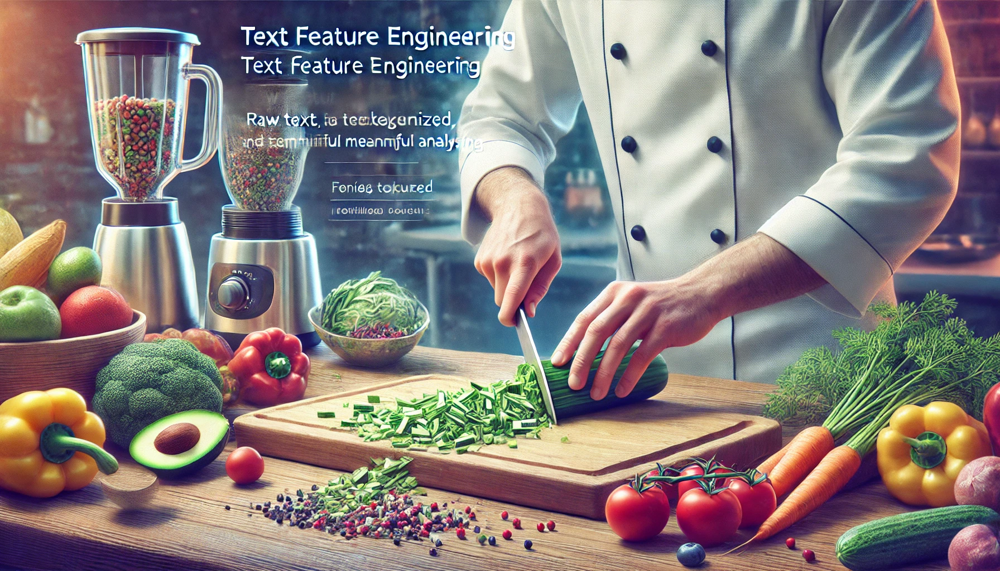

Beyond the Numbers – Feature Engineering for Text Data

Text data is everywhere—customer reviews, support tickets, product descriptions, survey responses—and it’s often the most underutilized source of insight in a dataset. While numbers are easy to model, text requires more creativity and structure to be useful.
This article explores:
✅ Why text is challenging—and powerful—for machine learning.
✅ How to extract structured features from raw text.
✅ Key techniques like TF-IDF, text length, sentiment, and n-grams.
✅ Practical examples in R (tidytext) and Python (scikit-learn / NLP).
Why Text Needs Feature Engineering
Unlike numerical or categorical features, text data is:
Unstructured — There’s no inherent format, just characters.
Variable in length — A tweet and a product review are both “text†but vastly different.
Rich in signal — Word choice, tone, and structure carry valuable information.
So why don’t we just throw text into a model?
Because most machine learning algorithms expect fixed-length, structured inputs. Text must be transformed into features the model can learn from.
📌 What Can We Learn from Raw Text?
| Signal Type | Example Feature |
|---|---|
| Volume | Number of characters, words, sentences |
| Structure | Use of punctuation, capital letters |
| Semantics | TF-IDF scores, word embeddings |
| Sentiment | Polarity score, positive/negative tone |
| Topic | Presence of key terms, topic clusters |
These features can be numeric, binary, categorical, or even embedded vectors.
📌 Example Use Case: Hotel Review Sentiment
| Review Text | Stars | Word Count | Sentiment | TF-IDF | … |
|---|---|---|---|---|---|
| “The room was spotless and the staff was kind.†| 5 | 9 | Positive | … | |
| “Terrible service and dirty bathroom.†| 1 | 6 | Negative | … |
✅ We can model review stars, churn likelihood, or customer satisfaction using engineered text features.
Basic Text Feature Extraction (Length, Count, Structure)
Before jumping into complex techniques like embeddings or TF-IDF, let’s not overlook the surprisingly powerful features that come straight from the structure of the text itself. These basic numeric summaries often carry strong signals—especially in short-form content like reviews, tickets, or emails.
This chapter focuses on extracting structural and volume-based features such as:
✅ Character and word counts
✅ Punctuation and special characters
✅ Capitalization and formatting patterns
✅ Readability metrics
1️⃣ Text Length-Based Features
The length of text can often correlate with its meaning or intent.
| Text | Word Count | Char Count |
|---|---|---|
| “OK.†| 1 | 3 |
| “Thanks so much for your help!†| 6 | 31 |
| “Absolutely terrible experience, never again.†| 6 | 44 |
📌 R: Length Features Using stringr and dplyr
library(dplyr)
library(stringr)
df <- df %>%
mutate(
word_count = str_count(text, "\\w+"),
char_count = str_length(text)
)📌 Python: Length Features Using pandas
df['word_count'] = df['text'].str.split().str.len()
df['char_count'] = df['text'].str.len()✅ These features often act as proxies for verbosity, clarity, or emotional tone.
2️⃣ Punctuation & Special Character Features
Characters like exclamation points, question marks, emojis, or ALL CAPS often express emotion, urgency, or attitude.
| Text | Excl. Count | Uppercase Count |
|---|---|---|
| “This is AMAZING!!†| 2 | 7 |
| “Is this working?†| 0 | 0 |
📌 R: Punctuation Features Using stringr
df <- df %>%
mutate(
num_exclam = str_count(text, "!"),
num_question = str_count(text, "\\?"),
num_upper = str_count(text, "[A-Z]")
)📌 Python: Same in pandas
df['num_exclam'] = df['text'].str.count('!')
df['num_question'] = df['text'].str.count('\\?')
df['num_upper'] = df['text'].str.findall(r'[A-Z]').str.len()3️⃣ Readability & Complexity Features
Basic stats like average word length, long word ratio, or Flesch reading ease can provide insight into how formal, technical, or accessible the text is.
📌 Python Example: Readability with textstat
import textstat
df['readability'] = df['text'].apply(textstat.flesch_reading_ease)📌 R Example: Readability with quanteda
library(quanteda)
df$readability <- textstat_readability(df$text, measure = "Flesch")$Flesch✅ High or low readability can signal anything from spam to legal language to customer distress.
📌 Summary: Structural Features to Start With
| Feature | What It Reflects |
|---|---|
| Word / Character Count | Length, verbosity |
| Number of Exclamation Points | Emotion, intensity |
| Number of Uppercase Letters | Emphasis, shouting |
| Readability Score | Complexity, accessibility |
These simple metrics are easy to compute and can deliver strong baseline performance, especially when used alongside other structured data.
Keyword-Based Features – TF-IDF, N-Grams & Frequency Counts
Once you’ve squeezed all the value out of structural and length-based features, it’s time to go deeper—into the words themselves. Keyword-based features transform raw text into a structured representation of its content, allowing your models to capture meaning, context, and emphasis.
This chapter focuses on:
✅ Word and term frequency (TF)
✅ TF-IDF (Term Frequency-Inverse Document Frequency)
✅ N-grams (phrases of 2+ words)
✅ Most frequent word indicators
1️⃣ Term Frequency (TF) – Basic Bag-of-Words
Bag-of-Words (BoW) is the foundation of keyword-based feature engineering. It counts how many times each word appears in a document, ignoring order and grammar.
| Text | love | this | product |
|---|---|---|---|
| “I love this product!†| 1 | 1 | 1 |
| “Product was great†| 0 | 0 | 1 |
✅ Great for: Simple models, short text like reviews or tweets.
⌠Ignores: Context, synonyms, grammar, importance.
📌 R: Bag-of-Words with tidytext
library(tidytext)
library(dplyr)
df_tokens <- df %>%
unnest_tokens(word, text) %>%
count(id, word) %>%
bind_tf_idf(word, id, n) # Optional step📌 Python: Bag-of-Words with CountVectorizer
from sklearn.feature_extraction.text import CountVectorizer
vectorizer = CountVectorizer()
X_bow = vectorizer.fit_transform(df['text'])2️⃣ TF-IDF – Emphasizing Unique Words
TF-IDF downweights common words (“the”, “is”) and upweights words that are rare but meaningful in specific texts (“refund”, “broken”, “delighted”).
\[TF-IDF(t,d) = TF(t,d) \times log(\frac{N}{DF(t)})\]
Where:
t = term
d = document
N = total number of docs
DF(t) = number of docs containing term t
📌 R: TF-IDF with tidytext (continued)
Already done in the example above with bind_tf_idf(). You can then cast_dtm() to get the matrix.
📌 Python: TF-IDF with TfidfVectorizer
from sklearn.feature_extraction.text import TfidfVectorizer
vectorizer = TfidfVectorizer()
X_tfidf = vectorizer.fit_transform(df['text'])✅ Useful for: Finding most distinguishing words across documents.
3️⃣ N-Grams – Capturing Phrases, Not Just Words
N-grams let you detect phrases like “credit card”, “bad service”, or “very helpful”. They reveal more context than isolated words.
| Text | 2-grams |
|---|---|
| “very bad service†| “very bad”, “bad service†|
📌 R: Extracting Bigrams with unnest_tokens()
df_bigrams <- df %>%
unnest_tokens(bigram, text, token = "ngrams", n = 2)📌 Python: Bigrams with CountVectorizer
vectorizer = CountVectorizer(ngram_range=(2, 2))
X_bigrams = vectorizer.fit_transform(df['text'])✅ Powerful for: Sentiment, intent detection, topic modeling.
4️⃣ Flagging Important Terms (Keyword Indicators)
Sometimes, all you need is a binary indicator: did the user mention “refund� “cancel� “perfect� This is especially useful when domain-specific keywords drive decisions.
📌 R: Keyword Flags
df <- df %>%
mutate(refund_mentioned = str_detect(text, regex("refund", ignore_case = TRUE)))📌 Python: Keyword Flags
df['refund_mentioned'] = df['text'].str.contains('refund', case=False, na=False)✅ This is a great lightweight feature in domain-specific tasks.
📌 Summary: Keyword-Based Feature Toolkit
| Feature | Use Case |
|---|---|
| Bag-of-Words (TF) | Basic presence of terms |
| TF-IDF | Detects unique terms in each document |
| N-Grams | Captures meaningful phrases |
| Keyword Flags | Quick domain-specific signals |
These features bridge the gap between raw text and machine-readable inputs, especially when building traditional ML models (e.g., logistic regression, random forest, XGBoost).
Semantic Features & Word Embeddings
While keyword-based features like TF-IDF and n-grams are great at counting words, they fall short when it comes to understanding meaning. They treat “good†and “great†as unrelated, and “not bad†as equivalent to “bad.”
That’s where word embeddings come in.
This chapter covers:
✅ The concept behind word embeddings
✅ Pretrained embeddings like GloVe, Word2Vec, and FastText
✅ Sentence and document embeddings (e.g., BERT, Doc2Vec)
✅ How to incorporate embeddings into machine learning workflows
1️⃣ What Are Word Embeddings?
Embeddings represent words as dense numeric vectors in a way that captures semantic similarity. Words that occur in similar contexts will have similar vectors.
| Word | Vector (simplified) |
|---|---|
| “cat†| [0.25, 0.81, -0.12, …] |
| “dog†| [0.27, 0.78, -0.09, …] |
| “coffee†| [-0.45, 0.14, 0.66, …] |
🔹 “cat†and “dog†will have vectors closer to each other than to “coffee.”
🔹 Unlike BoW/TF-IDF, embeddings preserve context and meaning.
2️⃣ Using Pretrained Embeddings
You can use pretrained embeddings (trained on massive corpora like Wikipedia or Common Crawl) instead of training your own.
📌 Python: Using GloVe or Word2Vec with gensim
import gensim.downloader as api
model = api.load("glove-wiki-gigaword-50") # or "word2vec-google-news-300"
vector = model['coffee'] # 50-dimensional vectorTo get a sentence or document embedding, average word vectors:
import numpy as np
def sentence_embedding(text):
words = text.split()
vectors = [model[word] for word in words if word in model]
return np.mean(vectors, axis=0)
df['text_embedding'] = df['text'].apply(sentence_embedding)📌 R: Using Pretrained Embeddings via text2vec or text packages
library(text)
# Create word embeddings (GloVe-like) using built-in embeddings
embeddings <- textEmbed("coffee is great")✅ R users can also use pretrained word embeddings from fastText via text2vec or spaCy (Python + reticulate).
3️⃣ Contextual Embeddings (BERT and Friends)
Unlike static embeddings, transformer-based models like BERT generate context-aware embeddings.
bank†in “river bank†≠“bank†in “savings bank”
BERT knows the difference based on sentence context.
📌 Python: Sentence Embeddings with sentence-transformers
from sentence_transformers import SentenceTransformer
model = SentenceTransformer('all-MiniLM-L6-v2')
df['embedding'] = df['text'].apply(lambda x: model.encode(x))✅ Great for: Semantic search, clustering, document similarity, advanced NLP tasks
⌠Slower and heavier than traditional models—but much more powerful.
4️⃣ When to Use Which?
| Technique | Use Case | Pros | Cons |
|---|---|---|---|
| TF-IDF | Classical models | Simple, fast | Ignores meaning |
| GloVe / Word2Vec | General semantic similarity | Lightweight | No context awareness |
| BERT / Transformers | Deep NLP tasks, similarity, classification | Context-aware | Heavier, slower |
✅ Use embeddings when your task involves meaning, not just frequency.
📌 Summary: From Words to Meaningful Vectors
| Feature Type | Example Use | Tool |
|---|---|---|
| Word Embedding | Semantic similarity | Word2Vec, GloVe, FastText |
| Sentence Embedding | Text classification, search | BERT, Sentence-BERT |
| Averaged Word Vectors | Quick sentence-level embedding | Manual or gensim |
Embeddings allow you to turn freeform language into model-ready features that capture relationships, tone, and intent.
Pitfalls & Best Practices for Text Features
Working with text features can unlock massive value—but only if done carefully. Many common mistakes lead to data leakage, overfitting, or simply ineffective feature usage.
In this final chapter, we’ll cover:
✅ Common pitfalls in text preprocessing
✅ How to prevent leakage with TF-IDF and embeddings
✅ Best practices for combining text with structured data
✅ Model-friendly tips for production-ready pipelines
1️⃣ Common Pitfalls in Text Feature Engineering
| Pitfall | Why It’s a Problem |
|---|---|
| 🔠Preprocessing after splitting | Can cause leakage if you compute TF-IDF or vocab across full data |
| 🧼 Over-cleaning | Removing punctuation, stop words, or case can strip away meaning |
| 🔤 Rare word explosion | TF-IDF can explode in size if not pruned |
| 🧩 Treating text as fully independent | Ignoring interactions with structured data misses context |
📌 Example: Leakage via TF-IDF on Full Dataset
# ⌠Wrong: Vocabulary is learned from full dataset (train + test)
vectorizer = TfidfVectorizer()
X = vectorizer.fit_transform(df['text']) # Leakage!
# ✅ Right: Fit only on training set
vectorizer.fit(df_train['text'])
X_train = vectorizer.transform(df_train['text'])
X_test = vectorizer.transform(df_test['text'])✅ Always split your data first, then fit any vectorizers, embeddings, or scalers only on the training set.
2️⃣ Best Practices for Combining Text with Structured Data
Text is rarely alone—you often want to blend it with numeric or categorical data. To make this work:
✔ Use column transformers or recipes to handle each data type separately
Scale numeric features
Encode categoricals (dummy or target encoding)
Transform text (TF-IDF, embeddings)
✔ Normalize or rescale after combining if needed
- Especially important if you’re using distance-based models (SVMs, KNN)
📌 Python: Combining Text with Structured Data Using ColumnTransformer
from sklearn.compose import ColumnTransformer
from sklearn.preprocessing import StandardScaler, OneHotEncoder
from sklearn.feature_extraction.text import TfidfVectorizer
preprocessor = ColumnTransformer(transformers=[
('num', StandardScaler(), ['price', 'rating']),
('cat', OneHotEncoder(handle_unknown='ignore'), ['category']),
('txt', TfidfVectorizer(), 'review')
])📌 R: Using recipes to Combine Text and Tabular Data
library(tidymodels)
recipe_combined <- recipe(target ~ ., data = df) %>%
step_tokenize(review) %>%
step_tf(review) %>%
step_dummy(all_nominal_predictors()) %>%
step_normalize(all_numeric_predictors())✅ Combine text with other features in a clean and modular way that supports deployment.
3️⃣ Avoid Overfitting with Sparse Text Features
TF-IDF and n-gram matrices often create very high-dimensional, sparse datasets. This can lead to overfitting, especially on small datasets.
🛠Mitigation strategies:
Limit vocabulary size (
max_featuresormin_df/max_df)Use dimensionality reduction (e.g., Truncated SVD on TF-IDF)
Try embeddings instead, especially for deeper models
4️⃣ Choose Features Based on the Model Type
| Model Type | Preferred Text Features |
|---|---|
| Linear Models | TF-IDF, n-grams |
| Tree-based Models | Aggregated embeddings, keyword flags |
| Neural Networks | Word or sentence embeddings |
| Ensemble Models | Combine structural, TF-IDF, and text flags |
✅ Not all models benefit from raw TF-IDF or embeddings—choose based on interpretability and performance needs.
📌 Summary: Text Feature Engineering Done Right
| ✅ Best Practices | ⌠Pitfalls to Avoid |
|---|---|
| Preprocess after splitting | Preprocessing before split causes leakage |
| Use multiple feature types | Relying only on TF-IDF or BoW |
| Combine text with structured data | Ignoring interactions across features |
| Limit dimensionality of sparse features | Feeding 10k sparse terms into a random forest |
Text offers rich signals, but it must be handled carefully, especially when integrating into broader modeling pipelines.
Conclusion & What’s Next
Text data is often seen as messy and complex—but with the right tools and techniques, it becomes one of the most powerful sources of predictive insight in your entire dataset.
Throughout this article, we’ve explored how to turn raw text into structured, meaningful features, ready to drive performance in your models.
✅ Key Takeaways from Text Feature Engineering
✔ Even basic features like word count, punctuation, and readability can be surprisingly effective.
✔ TF-IDF and n-grams help capture content, frequency, and intent across many documents.
✔ Word embeddings (GloVe, Word2Vec) add semantic understanding, and transformer models like BERT allow context-aware representations.
✔ Avoid data leakage—always split your data first, and fit vectorizers/embeddings only on the training set.
✔ Combine text with structured features in clean, modular pipelines using recipes (R) or ColumnTransformer (Python).
✔ Match your feature type to the model you’re using—and be wary of high dimensionality.
✅ Good text features are not only useful in NLP tasks—they can also supercharge churn models, sentiment prediction, fraud detection, and more.
📌 What’s Next in the Series?
Up next is the final article in the Feature Engineering Series:
“The Final Cut – Choosing the Right Features for the Job”
We’ll cover:
🔹 How to evaluate feature usefulness (correlation, importance, permutation)
🔹 Feature selection strategies (filter, wrapper, embedded)
🔹 When fewer features beat more
🔹 Interpreting model feedback to refine your inputs
🔹 Best practices for pruning, testing, and simplifying your feature space
📦 Whether your features come from text, time-series, categories, or numbers—this final episode will help you pick the best ones and ditch the rest.